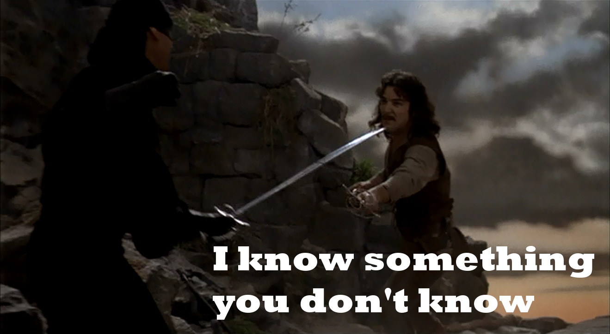

Context is King
Let’s suppose for a moment you don’t know anything about baseball. Perhaps you don’t, which will make this thought exercise even easier. Now suppose I tell you that in a given year, 25-35% of players will be left handed. Wow, you think, slowly backing away hoping I’ll stop saying random stats at you. Now you have this piece of information, but what does it mean?
 Does it mean baseball players dual the Dread Pirate Roberts a lot? Something to think about.
So you quickly pull out your phone and Google how many people are left-handed, and quickly find that they account for 10% of the population. Now knowing that, you can begin to work out why it’s so much higher in baseball. (Lefties hit right-handed pitchers better, so it’s a desirable skill.)
This is a pretty benign example, but it showcases that a number without something to compare it to tells us almost nothing. Manchester United scores 2.5 goals a game? Great, is that good or bad? That used car cost $35K? How does that compare to similar cars, has that value changed over time and is it likely to go up or down soon?
These may all seem pretty obvious, but our brains tend to not ask questions when we hear numbers sometimes. We hear that 1% of people on a new medication are having heart problems and we instantly blame the medication and demand it be burned with fire. In practice, we ought to ask “how does that compare to everybody else? Would these people have likely developed issues either way?”.
Not that anybody would have an irrational response to a new medication. Sorry for picking such a silly example.
All this has to be combined with some common sense, of course. It’s completely inappropriate after a mass shooting to say only 2 people died so it’s not as bad as others. If your investment advisor loses you one million, the fact that others have lost significantly more isn’t going to appease you. But when the numbers are being presented as a pattern or phenomenon, it’s legitimate - even necessary - to look for some sort of baseline for comparsion.